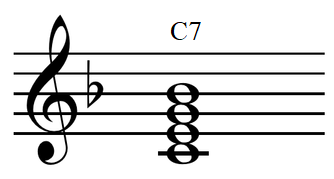
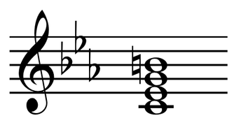
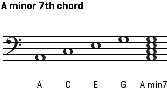

Harmony of jazz is based on harmony of classical music. The main difference classical music theory and jazz theory is while classical music uses mostly uses triples, jazz almost exclusively uses sevenths. There are 11 types of seventh chords: Major 7 (maj7), dominant 7 (7), Minor-major (maj m7), minor 7 (m7), half-diminished 7 (ø7), diminished (dim7), augmented (aug7), sustainable chords (sus2 and sus4) and major and minor sixth (6 and m6)
Major 7 is chord made up of root, major third, perfect fifth and major seventh. His functions are usualy as tonic or chord on subdominant degree of major scale, or chord on third degree of minor scale.
Dominant 7 Is chord made up of root, major third, perfect fifth and minor seventh. His most recognisible function is as dominant chord of major and harmonic and melodic minor scales. Every dominant 7 chord has his tritonus substitution. Tritonus is interval of 3 whole steps (a.k.a. augmented forth).
Minor-major is made up of root, minor third, perfect fifth, and major seventh. He could be found as tonic in (harmonic and melodic) minor scales.
Minor 7 chord is made up of root, minor third, perfect fifth and minor seventh. In major scales we can find him on second, third and sixth degree while in (natural) minor scales he is on tonic, subdominant and dominant degree. His role is as subdominant substitution.
